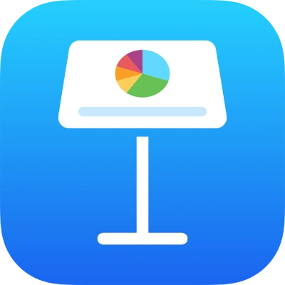
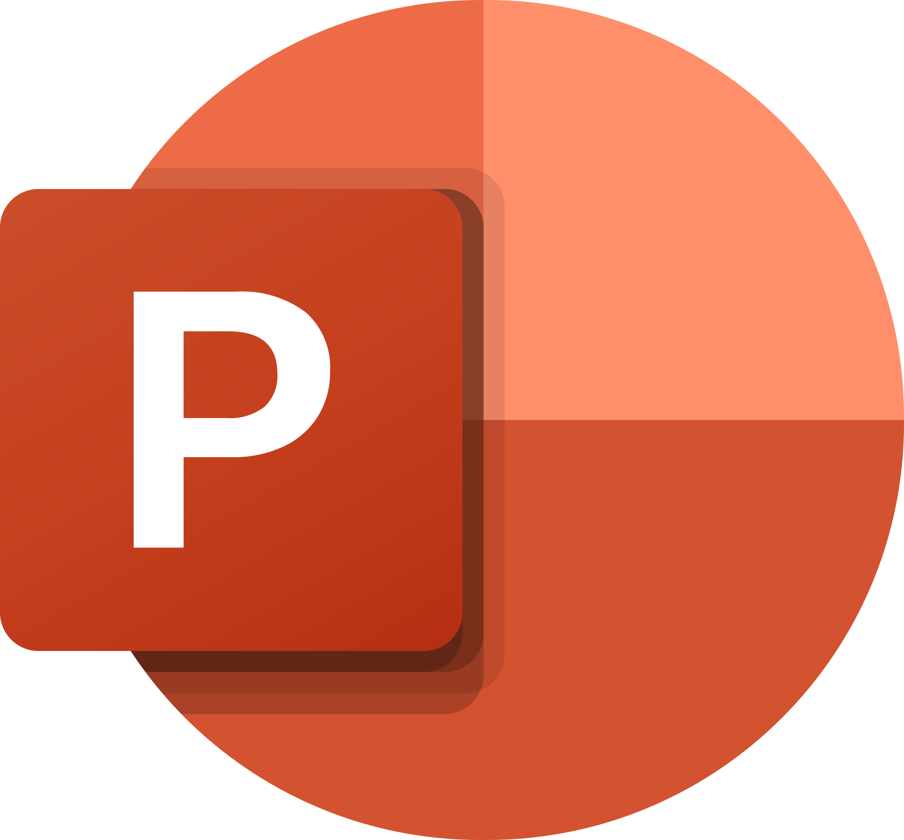

LaTeX

Code generated plots
UI controls



1---
2format: revealjs
3filters:
4 - editable
5---
6
7## lizard lizard lizard
8
9:::{style="top: 200px"}
10In today's fast-paced digital
11landscape, leveraging up-to-date
12memes is critical.
13:::
14
15{width=300px}
lizard lizard lizard
In today's fast-paced digital landscape, leveraging up-to-date memes is critical. Outdated memes signal cultural irrelevance and erode audience trust within milliseconds.
Studies show that meme freshness directly correlates with engagement. Always cite your sources — unless the meme is funnier without them.

I won’t let you down!